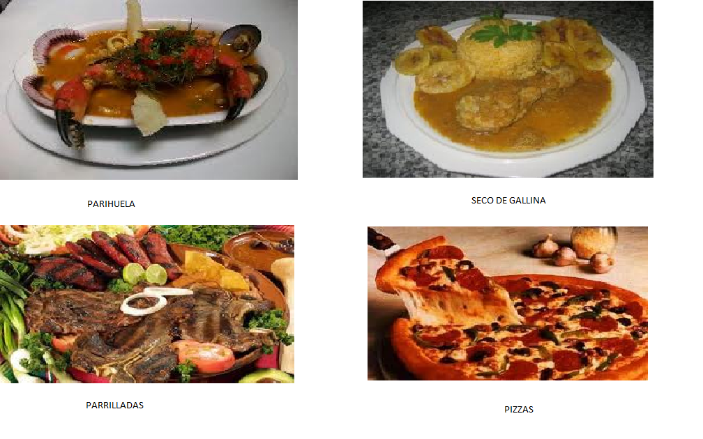
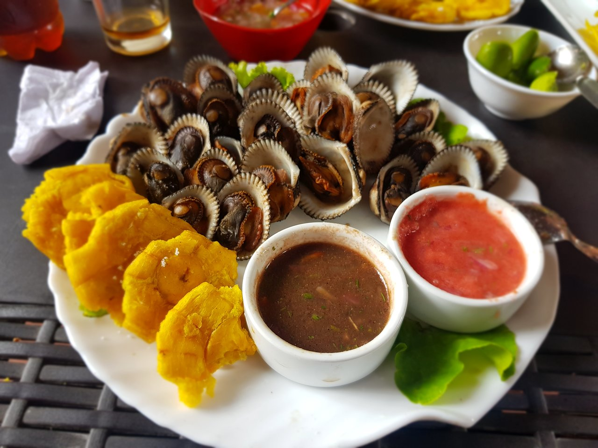
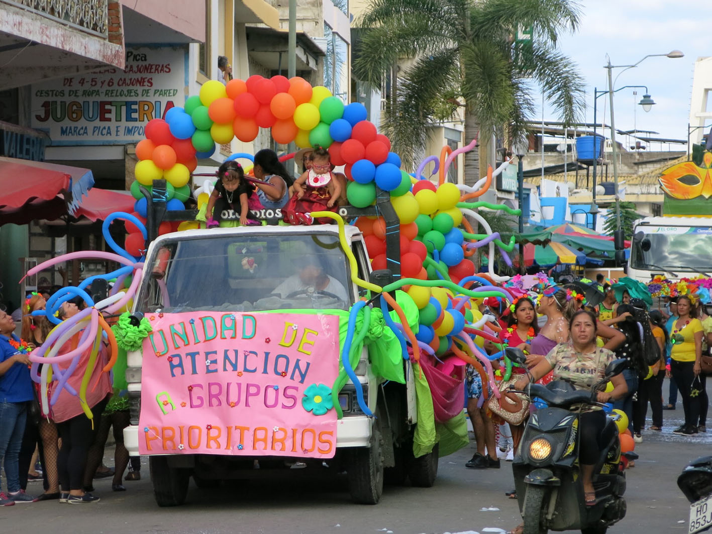
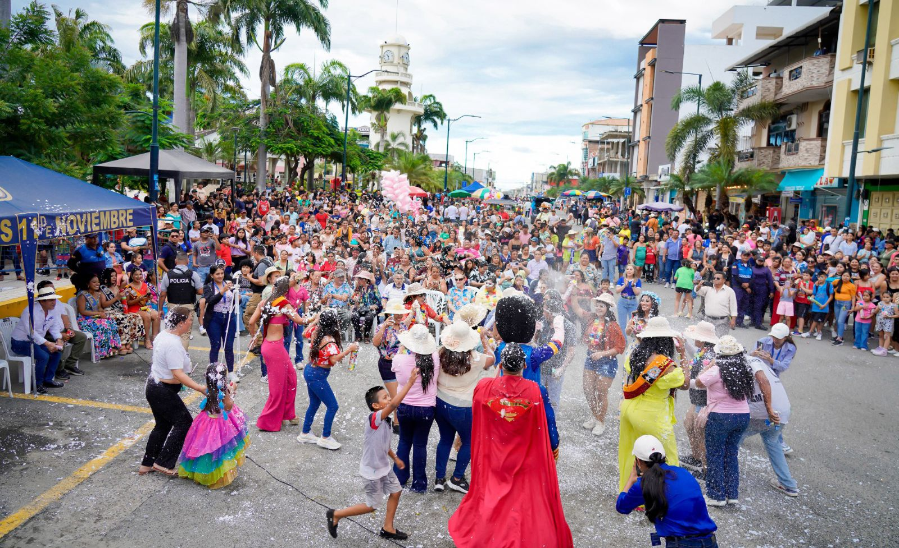

| Home | Galeria | Siuacion geografica | Costumbres | Sitios turisticos |
Ceviche de camarón: Uno de los platos más populares.Encebollado: Típico desayuno fuerte de la región.Seco de chivo o pollo: Muy consumido en festividades.Chifles y plátano verde: Muy comunes como acompañamiento.
 Fiestas de Cantonización (6 de octubre): Se celebra la creación del cantón Huaquillas con desfiles, eventos cívicos, festivales musicales y ferias. Carnavales: Se celebran con agua, espuma, música y desfiles, al igual que en muchas zonas de la Costa ecuatoriana. Semana Santa: Aunque es una celebración religiosa, también tiene manifestaciones culturales como procesiones y comidas típicas.
 